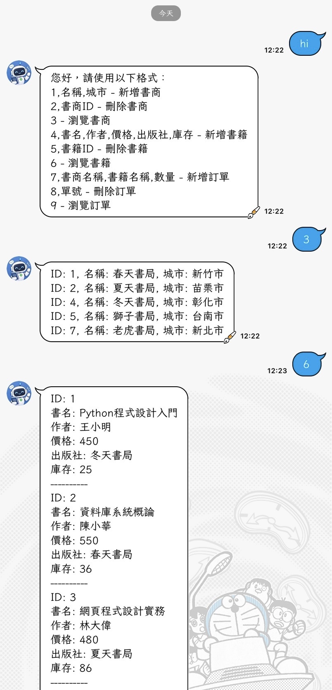
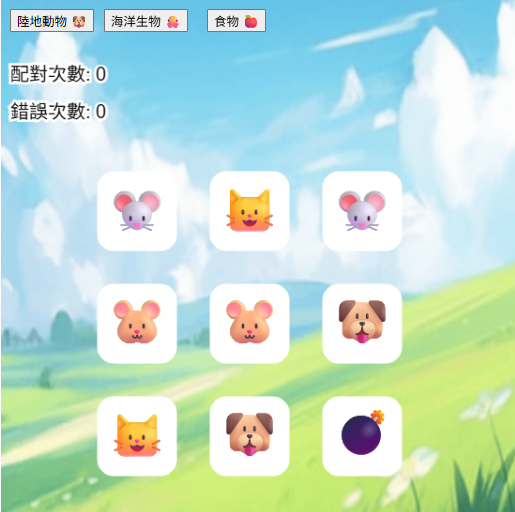

INFORMATION MANAGEMENT
胡振惟
資訊管理學系｜資訊系統開發・資訊應用
INFORMATION MANAGEMENT
資訊管理學系｜資訊系統開發・資訊應用
您好！我是胡振惟，畢業於國立聯合大學資訊管理學系，具備資訊系統開發與應用的學習背景。在大學期間，我透過課程、專題及產學合作，累積 Android 應用程式開發、藍牙通訊、資料庫應用與影像辨識等實作經驗。
在產學合作專案中，我主要負責 Android 藍牙資料接收系統的開發，參與介面設計、藍牙資料接收與解析、資料上傳及異常處理等工作。近一年的開發與測試經驗，讓我學習透過 Log
紀錄追蹤系統問題、分析異常原因，並依據測試結果調整程式邏輯，逐步培養系統整合、問題分析與除錯能力。
除了 Android 應用程式開發，我也透過不同類型的專案接觸前後端技術，例如運用 Python、Flask 與 MySQL 建置 LINE Bot
圖書管理系統，以及自行設計與製作個人作品集網站。這些實作經驗讓我更熟悉程式開發、資料處理與系統整合的應用，也培養了自主學習及解決問題的能力。
我期望未來能將所學與實作經驗應用於實際工作，從系統維護、問題排查到功能開發，持續累積實務經驗並提升專業能力。歡迎透過本網站了解我的專案成果、技術應用與學習歷程。
Hello! My name is Zhen-Wei Hu, and I graduated from the Department of Information Management at National United University. My academic background combines information technology, system development, and practical applications. During my university studies, I gained hands-on experience in Android application development, Bluetooth communication, database applications, and image recognition through coursework, projects, and industry collaboration.
In an industry collaboration project, I was primarily responsible for developing an Android-based Bluetooth data reception system. My work included interface design, Bluetooth data reception and parsing, data uploads, and error handling. Through nearly a year of development and testing, I learned to use log records to investigate system issues, analyze potential causes, and refine program logic based on test results. These experiences strengthened my skills in system integration, troubleshooting, and problem-solving.
Beyond Android development, I have explored both front-end and back-end technologies through various projects. For example, I developed a LINE Bot book management system using Python, Flask, and MySQL, and independently designed and built my personal portfolio website. These projects have helped me gain practical experience in programming, data processing, and system integration while strengthening my self-learning abilities.
I hope to apply my technical knowledge and project experience in a professional environment, contribute to system maintenance, troubleshooting, and feature development, and continue building my practical skills. Feel free to explore this website to learn more about my projects, technical experience, and learning journey.
資訊管理學系
主修資訊系統開發與應用，涵蓋程式設計、資料庫管理與系統分析，並結合商管知識培養跨領域整合與問題解決能力。
影像辨識系統開發、藍牙通訊資料整合與 Android 應用程式設計。
資訊傳播學系
學習資訊傳播、影像設計與多媒體製作，培養影像處理、視覺設計及數位內容製作能力，並具備 Adobe Photoshop 與 Illustrator 基礎應用經驗。
使用 Photoshop 進行照片修圖與影像合成，並使用 Illustrator 設計 Logo 及品牌視覺，具備基礎的影像處理與平面設計實作經驗。
以人工智慧及影像辨識為基礎之抽菸偵測系統
主要負責 MediaPipe 影像處理模組，並協助模型整合與系統設計，參與 AI 影像辨識功能開發流程，強化影像分析與系統整合能力。
藍牙資料接收與系統整合應用
獨立設計與開發App，實作藍牙資料串流與接收模組，並設計運作邏輯，優化資料傳輸穩定性與系統流程。

運用OpenCV + YOLOv8 + MediaPipe + EfficientNet-B0 技術，開發了一套自動判斷抽菸行為的智慧監測系統，系統會將攝影機畫面即時串流至網頁端，讓管理人員直接監看結果。當偵測到抽菸行為時，會同步保存影像與時間資訊，並通知管理人員。

開發藍牙資料接收應用程式，透過 Bluetooth 技術與外部裝置進行無線通訊，即時接收並顯示傳送的資料。系統具備即時資料處理與顯示功能，可應用於設備監控與資料傳輸，提升資料傳遞的即時性與穩定性，並作為與物聯網設備整合的實作基礎。

使用 Python、Flask、LINE Messaging API 與 MySQL 開發 LINE Bot 圖書管理系統，提供書籍資料查詢與互動功能。 後端串接 MySQL 資料庫，建立書籍、書商及訂單等資料表，實作資料新增、查詢、修改與刪除， 並透過 Flask 處理 LINE Webhook 與使用者訊息，完成 API、後端程式與資料庫的整合。

 2025
2025
中華民國物流協會
 2026
2026
Certiport